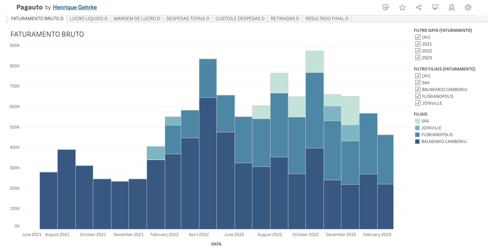

As a former athlete and data enthusiast, I combine an analytical profile with great discipline, which lead me to high standards through my personal and professional life.
I have previously worked with International Market Research, Sales and Business Intelligence; using SQL and Tableau to assist with my daily tasks. I also took a few courses including Google Data Analytics, Python Basics and Sports Marketing.


A deep view on the tournament numbers, using MySQL Workbench and Tableau

Creation of a complex metric used in volleyball professional leagues that involved regression models, such as Logistic, Ridge and CatBoost and was validated by tools like P-values and SHAP values.
Using Python for preprocessing and models such as Logistic Regression, Random Forest, SVM and Neural Net to predict frauds in credit card transactions EPL

Interactive dashboard for a company with 4 branches. Filtering allows user to analyze different years and locations individually or as a group
Analyzing the current financials of a real company and creating predictions based on realistic improvements. Used Tableau to show various accounting metrics.
This is a basic model able to predict customer churn for a banking institution. SKlearn was the base for preprocessing and modeling